먼저 생각해 보세요.
Je mehr ich schlafe, desto besser lerne ich. 이 사람은 언제 공부가 더 잘되나요?
je … desto는 '~할수록 더 ~하다'라는 뜻이에요.
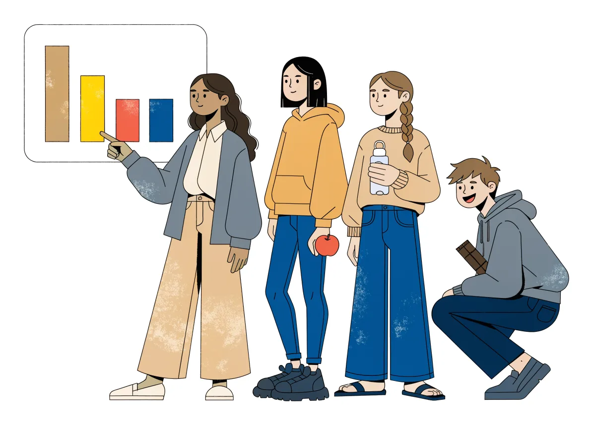
12월 초, 팟캐스트 첫 회가 나간 뒤예요. 9b는 다음 주제를 건강으로 정하고 반 학생 24명에게 물었어요. 얼마나 자고, 얼마나 움직이고, 무엇을 먹는지요.
눌러서 들어 보세요.
먼저 생각해 보세요.
Je mehr ich schlafe, desto besser lerne ich. 이 사람은 언제 공부가 더 잘되나요?
je … desto는 '~할수록 더 ~하다'라는 뜻이에요.
Lektion 4의 낱말 다섯 개를 다시 떠올려 보세요.
문법 je … desto, deswegen, sonst, außerdem, darauf, worauf (Verben mit Präposition)
이 과를 마치면 생활 습관을 이야기하고, 통계와 그래프를 설명하고, 원인과 결과를 말할 수 있어요.
12월 초 방과 후, 9b 교실이에요. 팟캐스트 팀이 설문 결과를 살펴봐요.
들으면서 찾아보세요. 반 학생 가운데 날마다 아침을 먹는 사람은 얼마나 되나요?
며칠 뒤, Emma의 어머니 Sabine의 병원이에요. Elif와 Lukas가 팟캐스트에 넣을 인터뷰를 녹음해요.
들으면서 찾아보세요. 청소년은 하루에 얼마나 움직여야 하나요?
두 대화를 듣고 답하세요.
Wie viele aus der 9b machen mindestens zweimal pro Woche Sport?
Die Mehrheit der Klasse frühstückt jeden Tag.
Nur die Hälfte frühstückt jeden Tag.
Warum schläft Lukas spät ein?
Was passiert, wenn Yuna nicht frühstückt?
Wie lange sollten Jugendliche schlafen?
Lukas muss auf Schokolade verzichten.
Frau Dr. Wagner sagt: „Darauf musst du nicht verzichten.“
청소년은 하루에 적어도 얼마나 움직여야 하나요?
낱말 33개예요. 낱말이나 예문 앞의 단추를 누르면 소리가 나요. 명사는 der, die, das를 색으로 구분했어요.
die Gesundheit 건강
Gesundheit ist wichtig.건강은 중요해요.
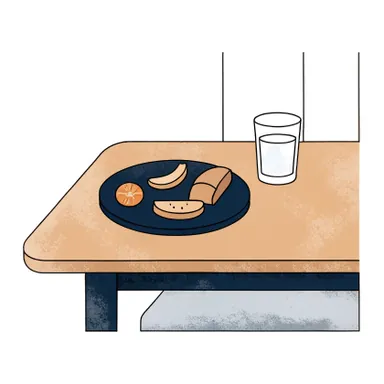
die Ernährung 식생활, 영양
Eine gesunde Ernährung hilft beim Lernen.건강한 식생활은 공부에 도움이 돼요.
sich ernähren, hat sich ernährt 먹고 살다, 식생활을 하다
Ich ernähre mich gesund.나는 건강하게 먹어요.
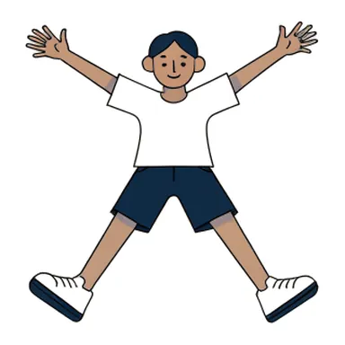
sich bewegen, hat sich bewegt 움직이다
Ich bewege mich zu wenig.나는 너무 적게 움직여요.
die Bewegung 움직임, 운동
Bewegung macht fit.운동하면 몸이 튼튼해져요.
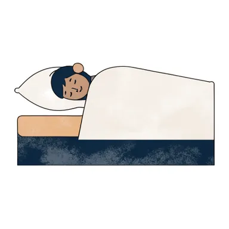
der Schlaf 잠
Genug Schlaf ist wichtig.잠을 충분히 자는 것이 중요해요.
die Gewohnheit, die Gewohnheiten 습관
Das ist eine gute Gewohnheit.그건 좋은 습관이에요.
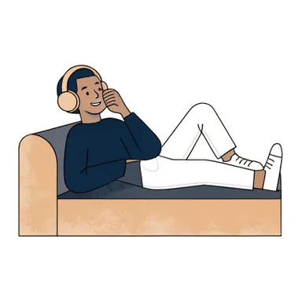
sich entspannen, hat sich entspannt 쉬다, 긴장을 풀다
Am Abend entspanne ich mich.저녁에 나는 쉬어요.
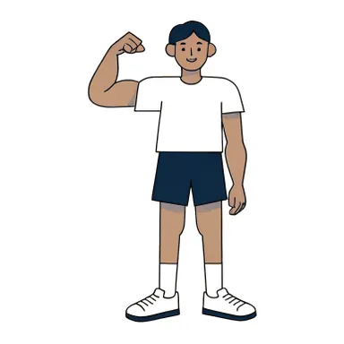
fit 몸이 튼튼한, 기운찬
Nach dem Sport bin ich fit.운동하고 나면 기운이 나요.
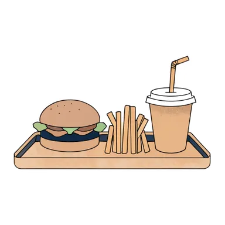
ungesund 건강에 나쁜
Zu viel Zucker ist ungesund.설탕을 너무 많이 먹으면 건강에 나빠요.
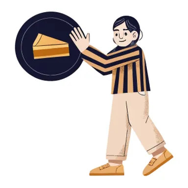
verzichten, hat verzichtet (~ 없이) 지내다, 끊다
Ich verzichte auf Zucker.나는 설탕을 끊어요.
achten, hat geachtet 신경 쓰다, 주의하다
Ich achte auf meine Gesundheit.나는 건강에 신경 써요.
der Jugendliche, die Jugendlichen 청소년
Viele Jugendliche schlafen zu wenig.많은 청소년이 잠을 너무 적게 자요.
die Statistik, die Statistiken 통계
Die Statistik zeigt das Ergebnis der Umfrage.통계가 설문 결과를 보여 줘요.
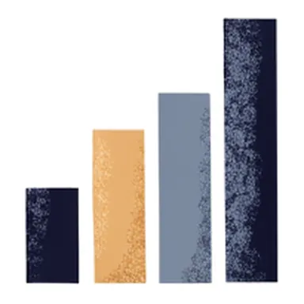
die Grafik, die Grafiken 그래프, 도표
Die Grafik zeigt vier Zahlen.그래프가 숫자 네 개를 보여 줘요.
das Prozent, die Prozente 퍼센트
Fünfzig Prozent frühstücken jeden Tag.50퍼센트가 날마다 아침을 먹어요.
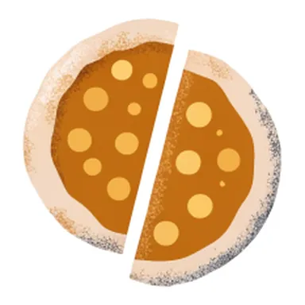
die Hälfte, die Hälften 절반
Die Hälfte der Klasse frühstückt.반의 절반이 아침을 먹어요.
das Drittel, die Drittel 3분의 1
Ein Drittel schläft zu wenig.3분의 1이 잠을 너무 적게 자요.
das Viertel, die Viertel 4분의 1
Ein Viertel isst täglich Obst.4분의 1이 날마다 과일을 먹어요.
der Durchschnitt 평균
Im Durchschnitt schlafe ich sieben Stunden.나는 평균 일곱 시간 자요.
die Mehrheit 다수, 반이 넘는 수
Die Mehrheit macht Sport.반이 넘는 학생이 운동해요.
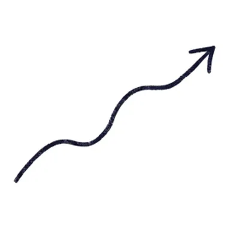
steigen, ist gestiegen 오르다, 늘다
Die Zahl steigt.숫자가 늘어요.
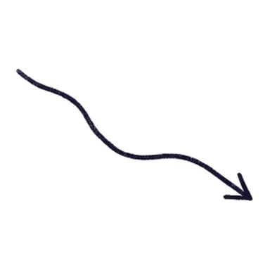
sinken, ist gesunken 내려가다, 줄다
Die Zahl sinkt.숫자가 줄어요.
mindestens 적어도
Schlaf mindestens acht Stunden!적어도 여덟 시간은 자!
die Ursache, die Ursachen 원인
Die Ursache ist oft das Handy.원인은 휴대폰일 때가 많아요.
deswegen 그래서
Ich schlafe wenig, deswegen bin ich müde.나는 잠을 적게 자요. 그래서 피곤해요.
sonst 안 그러면
Trink Wasser, sonst bekommst du Kopfschmerzen.물을 마셔. 안 그러면 머리가 아파.
außerdem 게다가
Sport macht fit. Außerdem macht er Spaß.운동하면 튼튼해져요. 게다가 재미있어요.
täglich 날마다
Ich esse täglich Obst.나는 날마다 과일을 먹어요.
selten 드물게, 좀처럼 ~않다
Ich esse selten Fleisch.나는 고기를 잘 안 먹어요.
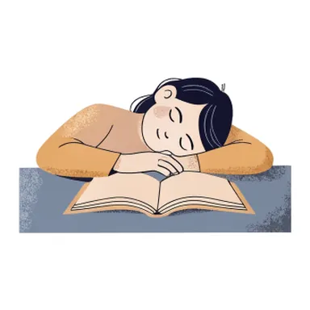
einschlafen (du schläfst ein, er schläft ein) 잠들다
Ich kann nicht einschlafen.나는 잠이 안 와요.
wach 깨어 있는
Um sechs bin ich schon wach.나는 여섯 시면 벌써 깨어 있어요.
träumen, hat geträumt 꿈꾸다
Ich träume von einer Reise nach Korea.나는 한국 여행을 꿈꿔요.
이 과의 낱말로 여덟 문제를 풀어요.
통계를 설명할 때는 퍼센트 대신 분수로 자주 말해요. 줄을 누르면 소리가 나요.
예문을 보고 답해 보세요.
je로 시작하는 앞 문장에서 동사는 어디에 오나요?
규칙
je와 desto 뒤에는 비교급이 와요. je 문장에서는 동사가 맨 끝에 와요. desto 문장에서는 비교급 바로 뒤에 동사가 와요.
| je + 비교급 … 동사 | desto + 비교급 + 동사 … |
|---|---|
| Je mehr ich schlafe, | desto besser lerne ich. |
| Je früher ich aufstehe, | desto mehr Zeit habe ich. |
| Je öfter wir üben, | desto leichter wird es. |
주의 비교급을 다시 떠올려요. gut – besser, viel – mehr, gern – lieber. desto 대신 umso를 쓰기도 해요.
예문을 보고 답해 보세요.
deswegen, sonst, außerdem 바로 뒤에는 무엇이 오나요?
규칙
세 낱말 모두 문장의 첫 자리에 오고, 바로 뒤에 동사가 와요. deswegen은 결과를, sonst는 그렇게 하지 않으면 생길 일을, außerdem은 덧붙이는 말을 이끌어요.
| 보기 | |
|---|---|
| deswegen | Ich schlafe wenig, deswegen bin ich müde. |
| sonst | Trink Wasser, sonst bekommst du Kopfschmerzen. |
| außerdem | Obst ist gesund. Außerdem schmeckt es gut. |
주의 deswegen은 A2에서 배운 deshalb와 뜻이 같아요.
예문을 보고 답해 보세요.
Worauf achtest du?에 맞는 대답은 무엇인가요?
규칙
achten auf, verzichten auf, träumen von, sich freuen auf처럼 동사가 전치사와 짝이 되면 물건이나 일은 wo + 전치사로 묻고 da + 전치사로 받아요. 전치사가 모음으로 시작하면 사이에 r를 넣어요. worauf, darauf, worüber, darüber.
| 질문 | 대답 |
|---|---|
| Worauf achtest du? | Auf genug Schlaf. Darauf achte ich auch. |
| Worauf verzichtest du? | Auf Zucker. Darauf verzichte ich nicht. |
| Wovon träumst du? | Von einer Reise. Davon träume ich auch. |
| Worauf freust du dich? | Auf die Ferien. Darauf freue ich mich auch. |
주의 사람을 물을 때는 wo-를 쓰지 않고 전치사 + wen, wem으로 물어요. Auf wen wartest du? – Auf Emma.
Lukas가 팟캐스트에서 한 주 동안 해 본 일을 이야기해요. 듣고 답하세요.
Eine Woche ohne Handy am Abend
Lukas Ich habe einen Test gemacht: eine Woche kein Handy nach neun Uhr.
Lukas Am ersten Abend war es schwer. Ich konnte lange nicht einschlafen.
Lukas Aber am dritten Tag bin ich schon um zehn eingeschlafen. Deswegen war ich am Morgen wach und fit.
Emma Und in der Schule?
Lukas Je mehr ich geschlafen habe, desto besser konnte ich mich konzentrieren. In Mathe habe ich alles verstanden!
Lukas Ich mache weiter. Nur am Wochenende nicht.
Was war Lukas' Test?
Am ersten Abend ist Lukas schnell eingeschlafen.
Er konnte lange nicht einschlafen.
Wann ist Lukas am dritten Tag eingeschlafen?
Lukas는 학교에서 무엇이 달라졌나요?
듣고 알맞은 것을 고르세요.
Yuna가 아침을 먹지 않으면 어떻게 되나요?
Ich frühstücke jeden Tag, sonst bin ich in der Schule müde.
Lukas는 무엇을 먹으면 기분이 좋아지나요?
Je mehr Schokolade ich esse, desto glücklicher bin ich.
Emma는 한 주에 몇 번 배구를 하나요?
Ich gehe zu Fuß zur Schule. Außerdem spiele ich zweimal pro Woche Volleyball.
Elif는 무엇을 기다리나요?
Worauf ich mich freue? Auf das Wochenende. Da kann ich endlich lange schlafen.
9b가 설문 결과를 기사로 썼어요. 읽고 답하세요.
Wie gesund lebt die 9b?
Für unseren Podcast haben wir 24 Schülerinnen und Schüler unserer Klasse gefragt. Hier sind die Ergebnisse.
Zwei Drittel der Klasse machen mindestens zweimal pro Woche Sport. Das ist die gute Nachricht.
Die schlechte Nachricht: Ein Drittel schläft weniger als sieben Stunden. Die Ursache ist oft das Handy.
Drei Viertel sind täglich mehr als drei Stunden am Bildschirm. Je länger sie am Bildschirm sind, desto weniger schlafen sie.
Nur die Hälfte frühstückt jeden Tag, und nur ein Viertel isst täglich Obst.
Frau Dr. Wagner rät: mehr Schlaf, mehr Bewegung und weniger Zeit am Handy.
Wie viele Schülerinnen und Schüler wurden gefragt?
Was ist die gute Nachricht?
Die Mehrheit schläft weniger als sieben Stunden.
Ein Drittel schläft weniger als sieben Stunden.
Was ist oft die Ursache für zu wenig Schlaf?
Frau Dr. Wagner가 권하는 것이 아닌 것은 무엇인가요?
9b의 설문 결과표예요. 보고 답하세요.
Umfrage der 9b (24 Schülerinnen und Schüler)
| Gewohnheit | Ja | Nein |
|---|---|---|
| zweimal pro Woche Sport | 16 | 8 |
| sieben Stunden Schlaf | 16 | 8 |
| jeden Tag Frühstück | 12 | 12 |
| täglich Obst | 6 | 18 |
| über drei Stunden am Handy | 18 | 6 |
Wie viele frühstücken jeden Tag?
Die Mehrheit isst täglich Obst.
날마다 과일을 먹는 학생은 6명뿐이에요.
Welche Zahl passt zu „drei Viertel“?
je … desto 문장이에요. 알맞은 말을 고르세요.
Je mehr ich schlafe, desto lerne ich.
je와 desto 뒤에는 비교급이 와요.
Je ich am Handy bin, desto später schlafe ich ein.
Je mehr Sport ich mache, fitter bin ich.
früher ich aufstehe, desto mehr Zeit habe ich.
Je weniger Zucker du isst, desto lebst du.
Je öfter wir üben, desto leichter .
desto + 비교급 바로 뒤에 동사가 와요.
deswegen, sonst, außerdem 가운데 알맞은 말을 고르세요.
Ich schlafe zu wenig, bin ich oft müde.
나는 잠을 너무 적게 자요. 그래서 자주 피곤해요.
Trink genug Wasser, bekommst du Kopfschmerzen.
물을 충분히 마셔. 안 그러면 머리가 아파.
Sport macht fit. macht er Spaß.
운동하면 튼튼해져요. 게다가 재미있어요.
Leg das Handy weg, kannst du nicht einschlafen.
휴대폰을 치워. 안 그러면 잠이 안 와.
Lukas hat nicht gefrühstückt, hat er Hunger.
Lukas는 아침을 안 먹었어요. 그래서 배가 고파요.
Obst ist gesund. schmeckt es gut.
과일은 건강에 좋아요. 게다가 맛있어요.
전치사와 짝이 되는 동사예요. 알맞은 말을 고르세요.
freust du dich? – Auf die Ferien.
sich freuen auf
träumst du? – Von einer Reise nach Korea.
träumen von
Achtest du auf deine Ernährung? – Ja, achte ich.
interessierst du dich? – Für Sport.
sich interessieren für
Schokolade? kann ich nicht verzichten.
wartest du? – Auf Emma.
사람은 전치사 + wen으로 물어요.
낱말을 순서대로 눌러 문장을 만드세요.
나는 많이 잘수록 공부가 더 잘돼.
나는 잠을 너무 적게 자. 그래서 피곤해.
너는 무엇을 기다려?
그건 포기할 수 없어.
낱말과 뜻을 짝지으세요.
듣고 그대로 써 보세요.
Ich frühstücke jeden Tag. 나는 날마다 아침을 먹어.
Darauf kann ich nicht verzichten. 그건 포기할 수 없어.
Bewegt euch mehr! 더 많이 움직이세요!
Ich achte auf … 나는 ~에 신경 써.
Ich schlafe im Durchschnitt … Stunden. 나는 평균 ~시간 자.
Ich mache zweimal pro Woche Sport. 나는 한 주에 두 번 운동해.
Auf … kann ich nicht verzichten. ~은 포기할 수 없어.
Die Hälfte der Klasse … 반의 절반이 …
Ein Drittel … 3분의 1이 …
Die Mehrheit … 반이 넘는 학생이 …
Nur jeder Vierte … 넷 가운데 한 명만 …
Die Zahl steigt. / Die Zahl sinkt. 숫자가 늘어. / 숫자가 줄어.
…, deswegen … 그래서
…, sonst … 안 그러면
Je mehr …, desto … ~할수록 더
Die Ursache ist … 원인은 ~이야.
Worauf achtest du? 너는 무엇에 신경 써?
Worauf freust du dich? 너는 무엇을 기다려?
Wovon träumst du? 너는 무엇을 꿈꿔?
대화 B에서 역할을 하나 고르세요. 상대의 말은 음성으로 나오고, 내 차례에는 직접 말해요.
내 생활 습관을 떠올리며 적으세요. 완성된 문장을 소리 내어 읽어 보세요.
Ich schlafe im Durchschnitt sieben Stunden.
Ich spiele zweimal pro Woche Badminton.
Auf Schokolade kann ich nicht verzichten.
Je mehr ich schlafe, desto fitter bin ich.
Wie gesund lebt die 9b?
위 결과표를 보고 9b의 생활 습관을 설명하는 글을 써요. 일곱 문장쯤 써요.
Die 9b hat 24 Schülerinnen und Schüler gefragt: Wie gesund lebt ihr? Zwei Drittel machen mindestens zweimal pro Woche Sport. Das finde ich gut. Aber nur die Hälfte frühstückt jeden Tag, und nur ein Viertel isst täglich Obst. Drei Viertel sind mehr als drei Stunden am Handy, deswegen schlafen viele zu wenig. Je länger man am Handy ist, desto später schläft man ein. Ich selbst frühstücke immer, sonst kann ich mich nicht konzentrieren. Mein Rat: Legt das Handy abends weg!
다 쓴 뒤에 확인해 보세요.
Ich kann über meine Gewohnheiten und meine Gesundheit sprechen.내 생활 습관과 건강을 이야기할 수 있어요.
Ich kann Zahlen aus einer Umfrage oder Statistik beschreiben.설문이나 통계의 숫자를 설명할 수 있어요.
Ich kann sagen, warum etwas so ist und was dann passiert.왜 그런지, 그래서 어떻게 되는지 말할 수 있어요.